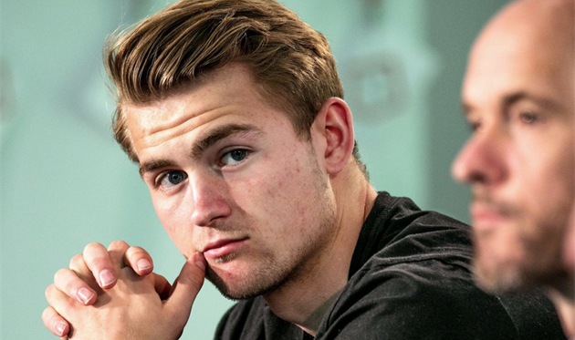
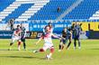
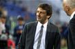
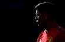

Архів новин
МЮ вирішив відмовитись від де Лігта - Sky Sports
-
Збірна України зіграє товариський матч проти Дніпро-1
Національна команда зіграє товариський поєдинок проти переможця Першої Ліги.
-
Катар U-20 - Україна U-20: прогноз букмекерів на поєдинок чемпіонату світу
Вашій увазі котирування букмекерів на матч молодіжних збірних.
-
Як Аталанта путівку в Лігу чемпіонів оформляла - Відео голів та огляд матчу
Вашій увазі поєдинок 38-го туру Серії А.
-

Стали відомі всі потенційні суперники Динамо по кваліфікації Ліги чемпіонів
Кияни стартують з третього раунду.
- 
Вакуленко може перейти в Дебрецен
Чемпіонат Угорщини може поповнитися ще одним українцем.
-
Юрій Вернидуб - кращий тренер 31-го туру УПЛ
Головний тренер Зорі Юрій Вернидуб визнаний кращим тренером передостаннього туру чемпіонату України.
- 
Леонардо может вернуться в ПСЖ
Функционер близок к уходу из Милана.
- 
Рохо не планирует покидать Манчестер Юнайтед
Защитник уверен, что у него есть будущее на Олд Траффорд.
-
Роналду впервые с 2006 года не попал в ТОП-3 бомбардиров по итогам чемпионата
Португалец стал четвертым в Серии А.